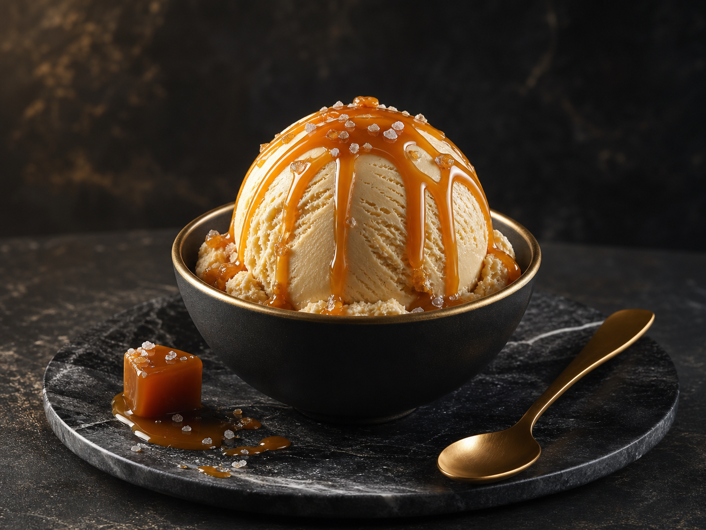

Madagascar Vanilla
花のように甘く、温かい香り。Vanilla VelvetとWhite Truffle Honeyに使用。
AromaFloral
TasteSoft Sweet
Ingredients
香り、味わい、産地、使われるフレーバーまで。素材の背景がブランドの信頼感と味の奥行きをつくります。

花のように甘く、温かい香り。Vanilla VelvetとWhite Truffle Honeyに使用。

濃密なカカオ感と上質な苦味。Midnight Chocolateの骨格を支えます。

香ばしく青みのあるナッツの余韻。Pistachio Royaleに使用。

清らかなミルク感と自然なコク。すべてのクリームベースに使われます。

甘みの輪郭を整える繊細な塩味。Salted Caramel Goldで印象的に使用。
尖りのない甘みで素材の香りを引き立てます。各フレーバーに配合。
Quality Promise
産地、香り、味わいをひとつの設計として扱うことで、冷たいデザートに奥行きと信頼感を与えています。